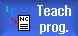

The cursor must be positioned on an empty line.
The windows for pasting program blocks contain input and output fields for the actual values in the WCS. Depending on the default setting, selection fields with parameters for motion behavior and motion transition are available.
When first selected, the input fields are empty, unless axes had already been traversed before the window was selected.
All data from the input/output fields are transferred to the program with the "Accept" softkey.
Procedure
|  | 1. | Teach-in mode is active. |
| | 2. | Position the cursor at the desired point in the program. If an empty row is not available, insert one. |
| | 3. | Press the softkeys "Rap. tra. G0", "Straight line G1", or "Circ. interm. pos. CIP" and "Circ. end pos. CIP". |
 | | The relevant windows with the input fields are displayed. |
| | 4. | Traverse the axes to the relevant position. |
 | 5. | Press the "Accept" softkey. A new program block will be inserted at the cursor position. |
| | | - OR - |
 | | Press the "Cancel" softkey to cancel your input. |